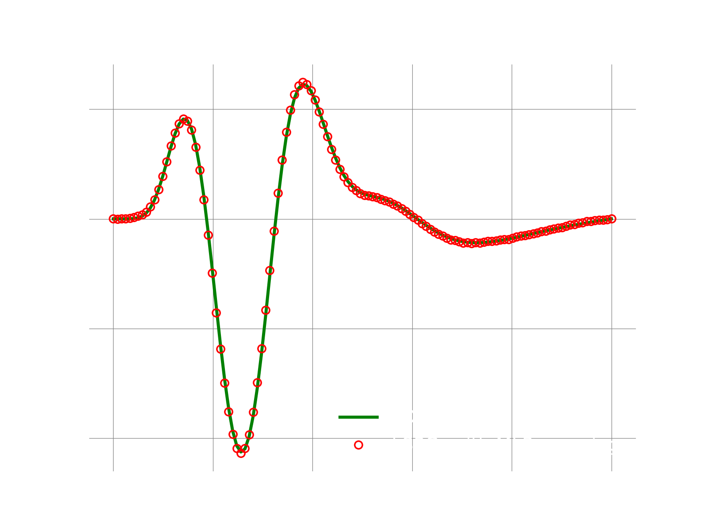

1D adv-diff: LSPG with nonlinear manifold projection via MLP
Overview
This demo solves the same problem as the one here, but instead of using POD modes, we show here how to use a nonlinear manifold computed approximated by a neural network. Specifically, we use a MLP with 2 hidden layers of sizes 64 and 200.
Main function
The main function of the demo is the following:
logger.initialize(logger.logto.terminal) logger.setVerbosity([logger.loglevel.info]) # create fom object fomObj = AdvDiff1d(nGrid=120, adv_coef=2.0) # the final time to integrate to finalTime = .05 #--- 1. FOM ---# fomTimeStepSize = 1e-5 fomNumberOfSteps = int(finalTime/fomTimeStepSize) sampleEvery = 200 [fomFinalState, snapshots] = doFom(fomObj, fomTimeStepSize, fomNumberOfSteps, sampleEvery) #--- 2. train a nonlinear mapping using PyTorch ---# # here we use 3 modes, change this to try different modes myNonLinearMapper = trainMapping(snapshots, romSize=3, epochs=500) #--- 3. LSPG ROM ---# romTimeStepSize = 3e-4 romNumberOfSteps = int(finalTime/romTimeStepSize) approximatedState = runLspg(fomObj, romTimeStepSize, romNumberOfSteps, myNonLinearMapper) # compute l2-error between fom and approximate state fomNorm = linalg.norm(fomFinalState) err = linalg.norm(fomFinalState-approximatedState) print("Final state relative l2 error: {}".format(err/fomNorm)) logger.finalize()
1. Run FOM and collect snapshots
This step is the same as described here,
2. Setup and train the nonlinear mapper
It is important to note that while the mapper class below has the API required by pressio4py, it can encapsulate any arbitrary mapping function. In this case we show how to create a MLP-based representation in PyTorch, but one can use any other types of mapping and any other library (e.g., Tensorflow, keras). All of the PyTorch-specific code is encapsulated here. If you prefer Tensorflow/keras, an equivalent implementation is here.
The autoencoder is defined by
class myAutoencoder(torch.nn.Module): def __init__(self, fomSize, romSize=10): super(myAutoencoder, self).__init__() self.encoder = myEncoder(fomSize, romSize) self.decoder = myDecoder(fomSize, romSize) def forward(self, x): code = self.encoder(x) x = self.decoder(code) return x, code def train(self, dataloader, optimizer, n_epochs, loss=torch.nn.MSELoss()): scheduler = torch.optim.lr_scheduler.ReduceLROnPlateau(optimizer, factor=0.8, min_lr=1e-6) for epoch in range(n_epochs): total_train_loss = 0.0 for data,label in dataloader: optimizer.zero_grad() output, latent = self.forward(data) loss_size = loss(output, label) loss_size.backward() optimizer.step() total_train_loss += loss_size.item() scheduler.step(total_train_loss) class myEncoder(torch.nn.Module): def __init__(self, fomSize, romSize): super(myEncoder, self).__init__() self.fc1 = torch.nn.Linear(fomSize, 200) self.fc2 = torch.nn.Linear(200, 64) self.fc3 = torch.nn.Linear(64, romSize) def forward(self, x): x = self.fc1(x) x = F.elu(x) x = self.fc2(x) x = F.elu(x) x = self.fc3(x) x = F.elu(x) return x class myDecoder(torch.nn.Module): def __init__(self, fomSize, romSize): super(myDecoder, self).__init__() self.romSize_ = romSize self.fomSize_ = fomSize self.fc1 = torch.nn.Linear(romSize, 64) self.fc2 = torch.nn.Linear(64, 200) self.fc3 = torch.nn.Linear(200, fomSize) def forward(self, x): x = self.fc1(x) x = F.elu(x) x = self.fc2(x) x = F.elu(x) x = self.fc3(x) return x
and is created/trained using
def trainMapping(snapshots, romSize, epochs, enable_restart=False): fomSize = snapshots.shape[0] model = myAutoencoder(fomSize, romSize) optimizer = optim.AdamW(model.parameters(), lr=5e-3) if enable_restart: if pathlib.Path('TrainingCheckpoint.tar').is_file(): print("Loading checkpoint") checkpoint = torch.load('TrainingCheckpoint.tar') model.load_state_dict(checkpoint['model_state_dict']) optimizer.load_state_dict(checkpoint['optimizer_state_dict']) samples = torch.utils.data.TensorDataset(torch.Tensor(snapshots.T), torch.Tensor(snapshots.T)) loader = torch.utils.data.DataLoader(samples, batch_size=500, shuffle=True) model.train(loader, optimizer, n_epochs=epochs) if enable_restart: torch.save({ 'model_state_dict': model.state_dict(), 'optimizer_state_dict': optimizer.state_dict() }, 'TrainingCheckpoint.tar') return MyMapper(model.decoder, model.encoder)
This is all wrapped in a mapper class which conforms to the API required by Pressio
class MyMapper: def __init__(self, decoderObj, encoderObj): self.decoder_ = decoderObj self.encoder_ = encoderObj self.numModes_ = decoderObj.romSize_ fomSize = decoderObj.fomSize_ self.fomState0 = np.zeros(fomSize) self.fomState1 = np.zeros(fomSize) # attention: the jacobian of the mapping must be column-major oder # so that pressio can view it without deep copying it, this enables # to keep only one jacobian object around and to call the update # method below correctly self.jacobian_ = np.zeros((fomSize,self.numModes_), order='F') def jacobian(self): return self.jacobian_ def applyMapping(self, romState, fomState): fomState[:] = self.decoder_(torch.Tensor(romState)).detach().numpy() def applyInverseMapping(self, fomState): romState = np.zeros(self.numModes_) romState[:] = self.encoder_(torch.Tensor(fomState)).detach()[:] return romState def updateJacobian(self, romState): self.updateJacobianFD(romState) def updateJacobianFD(self, romState): # finite difference to approximate jacobian of the mapping romStateLocal = romState.copy() self.applyMapping(romStateLocal,self.fomState0) eps = 0.001 for i in range(self.numModes_): romStateLocal[i] += eps self.applyMapping(romStateLocal, self.fomState1) self.jacobian_[:,i] = (self.fomState1 - self.fomState0) / eps romStateLocal[i] -= eps def updateJacobianExact(self, romState): # use pytorch autodifferentiation to compute jacobian of the mapping # slower than finite difference currently J = torch.autograd.functional.jacobian(self.decoder_, torch.Tensor(romState)) self.jacobian_[:,:] = J.detach()[:,:]
3. Construct and run LSPG
def runLspg(fomObj, dt, nsteps, customMapper): # this is an auxiliary class that can be passed to solve # LSPG to monitor the rom state. class RomStateObserver: def __call__(self, timeStep, time, state): pass # this linear solver is used at each gauss-newton iteration class MyLinSolver: def solve(self, A,b,x): lumat, piv, info = linalg.lapack.dgetrf(A, overwrite_a=True) x[:], info = linalg.lapack.dgetrs(lumat, piv, b, 0, 0) #---------------------------------------- # create a custom decoder using the mapper passed as argument customDecoder = rom.Decoder(customMapper, "MyMapper") # fom reference state: here it is zero fomReferenceState = np.zeros(fomObj.nGrid) # create ROM state by projecting the fom initial condition fomInitialState = fomObj.u0.copy() romState = customMapper.applyInverseMapping(fomInitialState) # create LSPG problem scheme = ode.stepscheme.BDF1 problem = rom.lspg.unsteady.DefaultProblem(scheme, fomObj, customDecoder, romState, fomReferenceState) # create the Gauss-Newton solver nonLinSolver = solvers.create_gauss_newton(problem, romState, MyLinSolver()) # set tolerance and convergence criteria nlsTol, nlsMaxIt = 1e-7, 10 nonLinSolver.setMaxIterations(nlsMaxIt) nonLinSolver.setStoppingCriterion(solvers.stop.WhenCorrectionAbsoluteNormBelowTolerance) # create object to monitor the romState at every iteration myObs = RomStateObserver() # solve problem ode.advance_n_steps_and_observe(problem, romState, 0., dt, nsteps, myObs, nonLinSolver) # after we are done, use the reconstructor object to reconstruct the fom state # get the reconstructor object: this allows to map romState to fomState fomRecon = problem.fomStateReconstructor() return fomRecon(romState)
Results
If everything works fine, the following plot shows the result.
